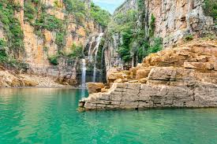

Capitólio, Minas Gerais
As belezas naturais da serra da canastra são inigualáveis. Desfrute de cachoeiras e da boa culinária mineira.

Cataratas do Iguaçu, Paraná
As Cataratas do Iguaçu são uma das maiores e mais impressionantes quedas d'água do mundo, localizadas na fronteira entre Brasil e Argentina. Uma visita ao Parque Nacional do Iguaçu é uma experiência inesquecível.

Chapada Diamantina, Bahia
A Chapada Diamantina é um paraíso para os amantes da natureza, com suas cachoeiras, grutas, trilhas e paisagens deslumbrantes. É um dos principais destinos de ecoturismo no Brasil.